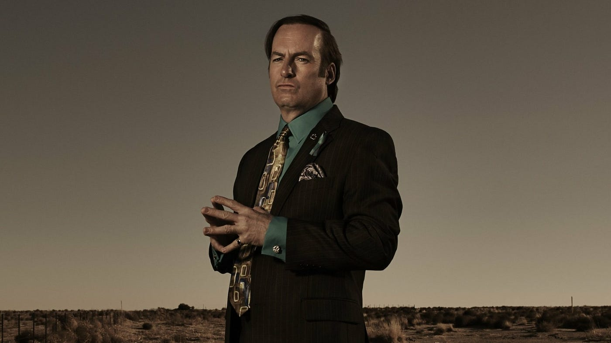

<div class="scroll-container">
    
    <!-- Section 1: Logo -->
    <section class="full-screen-section p-3 m-4">
      <div class="container shadow-lg text-center logo" style="padding: 0; padding-top: 50px;">
        
      </div>
    </section>
        
    <!-- Section 2: Desert Image with Retro Buttons -->
    <section class="full-screen-section p-3 m-4">
      <div class="container shadow-lg text-center image-container" style="padding: 0; border-radius: 30px;">
        <div class="image-overlay-container">
            
            
        </div>      
          <!-- Retro Button: Previous -->
          <div id="retro-prev" class="wrapper retro-btn primary">
            <a class="btn btn-lg btn-md btn-sm">
              <span class="btn-inner">
                <span class="content-wrapper">
                  <span class="btn-content">
                    <span class="btn-content-inner" label="Previous"></span>
                  </span>
                </span>
              </span>
            </a>
          </div>
          
          <!-- Retro Button: Next -->
          <div id="retro-next" class="wrapper retro-btn primary">
            <a class="btn btn-lg btn-md btn-sm">
              <span class="btn-inner">
                <span class="content-wrapper">
                  <span class="btn-content">
                    <span class="btn-content-inner" label="Next"></span>
                  </span>
                </span>
              </span>
            </a>
          </div>
        
        
      </div>   
    </section>
    <script>
        let index = 0;
        let currentAudio = null; // Track currently playing audio
    
        // Initialize speech bubbles array
        const bubbles = [];
        for (let i = 1; i <= 24; i++) {
            bubbles.push(`pixel-speech-bubble (${i}).gif`);
        }
    
        // Initialize audio files array
        const audioFiles = [];
        for (let i = 1; i <= 24; i++) {
            audioFiles.push(`voice_${i}.wav`);
        }
    
        // Define image changes for specific indexes
        const imageChanges = {
            1:"../images/SaulGodmanInDesert.jpg",
            4: "../images/saul.jpg",
            7: "../images/ohNO.webp",
            10: "../images/clean.jpg",
            15: "../images/driven.jpg",
            19: "../images/good.jpg",
            23: "../images/staire.webp"
        };
    
        $(document).ready(function() {
            $("#retro-next").on("click", function() {
                if (index < bubbles.length - 1) { // Prevent exceeding max index
                    stopCurrentAudio();
                    index++; // Increment before updating content
                    updateContent();
                    console.log("index (next):", index);
                }
            });
    
            $("#retro-prev").on("click", function() {
                if (index > 0) { 
                    stopCurrentAudio();
                    index--; 
                    updateContent();
                    console.log("index (prev):", index);
                }
            });
    
            function updateContent() {
                // Update overlay image
                $("#overlayedImg").attr("src", `../images/textBu/${bubbles[index]}`);
    
 
                if (index < audioFiles.length) {
                    currentAudio = new Audio(`../images/voices/${audioFiles[index]}`);
                    currentAudio.play();
                }
    
      
                if (imageChanges[index]) {
                    $("#baseImg").attr("src", imageChanges[index]);
                }
            }
    
            function stopCurrentAudio() {
                if (currentAudio) {
                    currentAudio.pause();
                    currentAudio.currentTime = 0;
                }
            }
        });
    </script>
    
    
    
    
    
  </div>
  